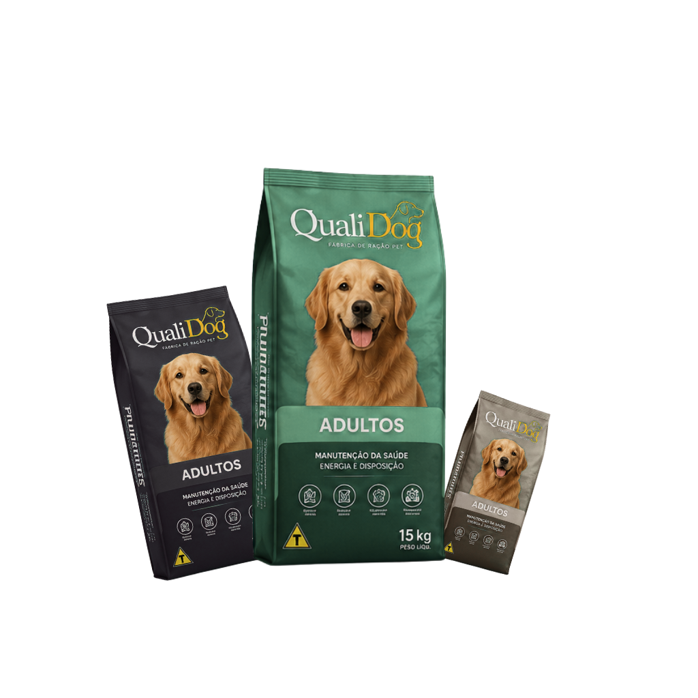
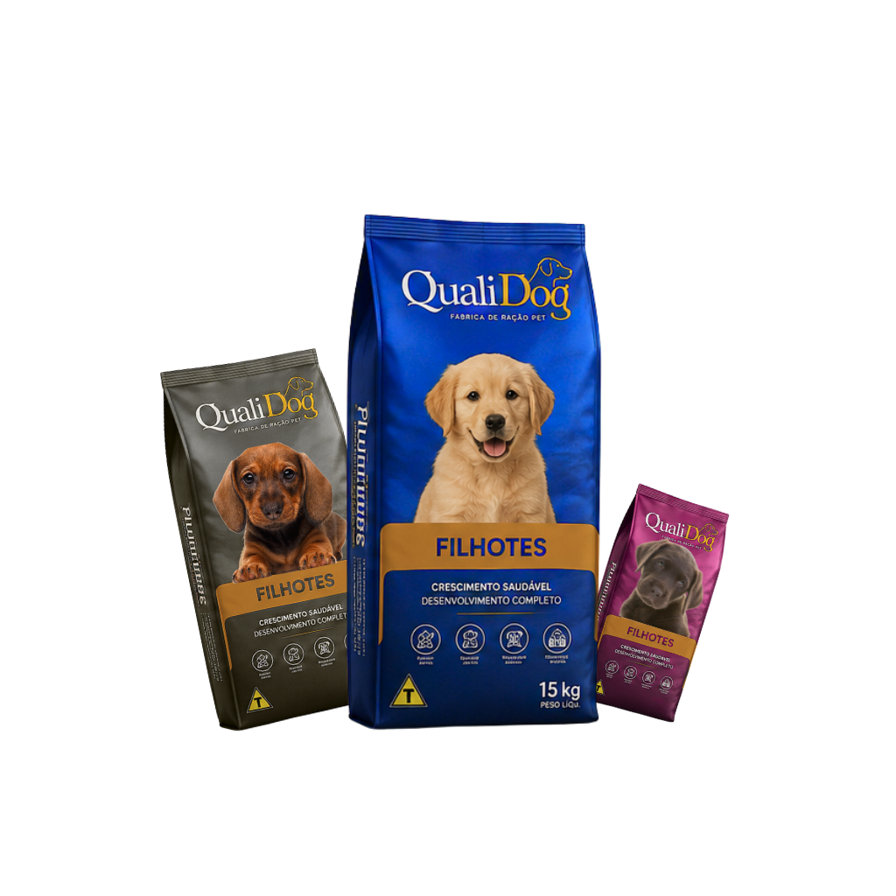
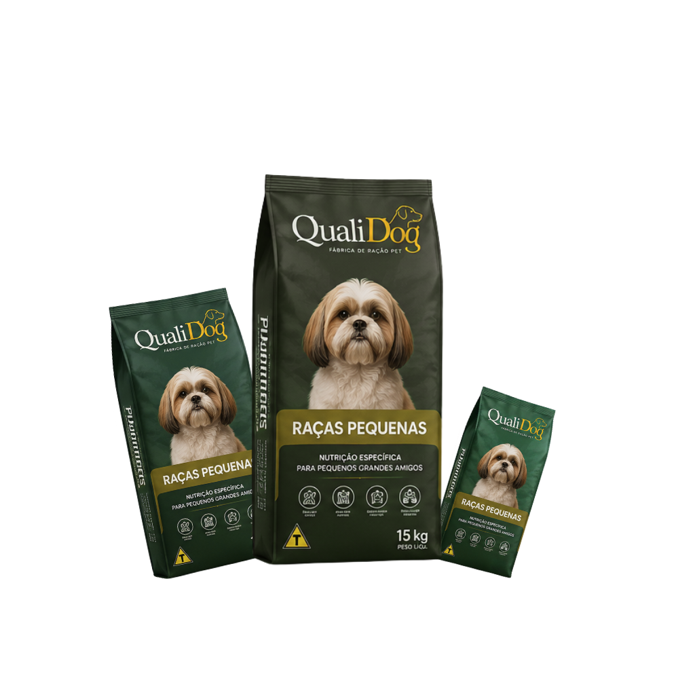

A QualiDog oferece alimentos desenvolvidos para atender diferentes fases da vida, portes e necessidades nutricionais dos cães.

Alimento completo, balanceado e desenvolvido para manutenção da saúde dos cães adultos.
LINHA ADULTOS
Formulação pensada para crescimento, desenvolvimento ósseo e fortalecimento dos filhotes.
LINHA FILHOTES
Grãos adaptados e nutrientes equilibrados para cães de pequeno porte.
RAÇAS PEQUENAS